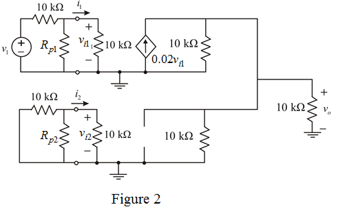
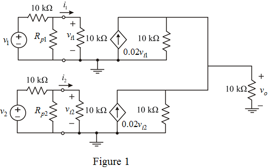
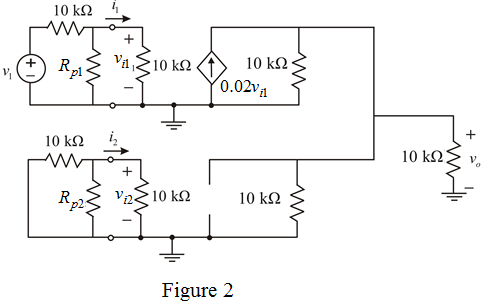
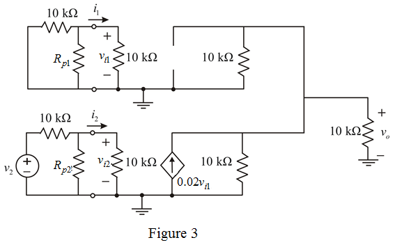
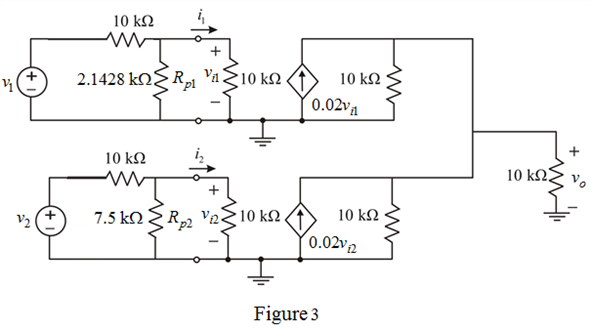

The input and output voltage relation is a sum of two signals is,
Apply superposition theorem.
Short circuit the voltage  and determine the output voltage.
and determine the output voltage.
Draw the modified circuit diagram.

Consider the circuit diagram.

The input and output voltage relation is a sum of two signals is,
Apply superposition theorem.
Short circuit the voltage and determine the output voltage.
Draw the modified circuit diagram.

Calculate the voltage .
…… (1)
Calculate the output voltage.
Therefore, the resistance is.
Short circuit the voltage  and determine the output voltage.
and determine the output voltage.
Draw the modified circuit diagram.

Calculate the value of voltage .
…… (2)
Calculate the output voltage.

Therefore, the resistance is.
Draw the sketch of amplifier topology.

Therefore, the sketch of amplifier topology is shown in Figure 3.